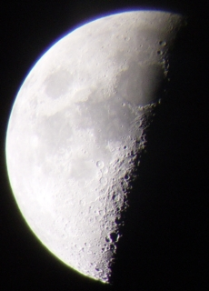
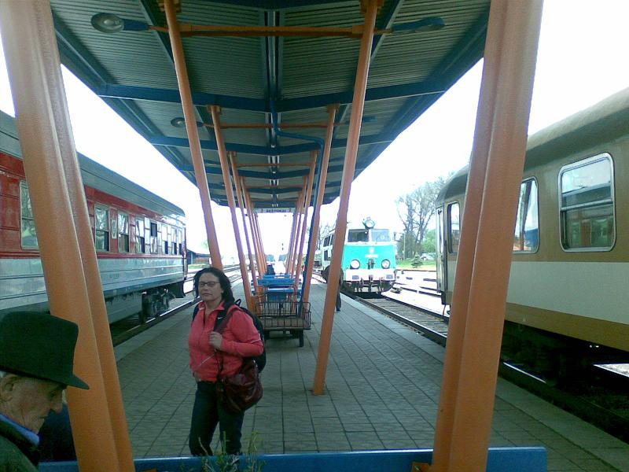

Viewed through Bresser Messier R127L Telescope. Picture taken with Sony Cybershot DSC-P71
Archive for May, 2008
The moon
Sunday, May 11th, 2008{kind=link}
Saturday 10th May 2008
Sunday, May 11th, 2008Breakfast at Hotel Reval Central in Tallinn is very good. Would definately stay here again. Number 2 bus goes to airport from next to Sakos hotel (5 min walk to Reval Central). Flight home is 12:00pm arr 12:55 Stanstead. Tallinn airport is very swish and not very busy. Toilets are cleanest I’ve seen since leaving Germany and they were also free! Free wifi at this airport. Duty free shopping is not much to write home about. Spotted Akmed (big brother) on our flight. £16 train ticket from stanstead to london.
Friday 9th May
Friday, May 9th, 2008Problem with water in our hotel enkurs which was not clever. Not so much as an apology or provision of bottled water. Could not eat the breakfast. Checked out about 9:00am. Bused and walked to station to leave luggage and then walked to old town. Went up lift of St. Peters Basilica (800 yrs old) to top of spire, 130meters. Great view of city from here. We were able to do all our sightseeing from here. Got 12:30 eurolines luxury bus to Tallin arrival eta 17:00 and cost 26Lat for two. Eurolines had wifi and free coffee and was very comfortable. Jumped on a tram number 4 to our Hotel, Reval Central. Nice hotel, nice clean (slightly quirky design) room, nice shower. After freshening up left hotel at 18:00 for the old town, about 10 minute walk. Went to Old Hansa, a medieval restaurant with authentic medieval food (which I think is probably well researched) and girls playing medieval music. Place was oversubscribed and we did not have a booking but they gave us a table for 1 hour. Waiters all dressed in medieval clothes and our waiter put on a very good act. Dad could get a job here. I had arabian beef in fig sauce with lentils and Yamini had himalyan lamb with spices. Both had honeyed dark beer. Bill was 496 EEK (£25). Then went for a walk around the old town, the city wall is impressive. Found the Depeche Mode bar, did not got in but took a picture. Went for irish coffee in Reval Cafe near old square. Had a pint in Kehrwieder on main square, a cafe bar in a cellar.
Thursday 8th May
Thursday, May 8th, 2008Up at 08:30 for breakfast at Nidos Smilte hotel which was a poor showing esp in comparison with Zakopane Villa Vita. Went for an hours cycling along the Lagoon. Another really nice day. Booked bus ticket for 12:00 to Smiltyne (14Lit) and then had a cappacino (4lit) and banana crepe (8 Lit) at Kursis Kavine in Nida. (The old man renting cycles from his front garden is just opposite and is recommended - no forms to sign etc but bikes probably a bit older than some of street corner renters). Bus 12:00 arrived 13:00 smiltyne. Got 13:15 ferry. Walked to bus station (20 min) and got 15:00 bus to Riga (110 LIT) arriving 19:00. Pretty bumpy ride and some unmade roads, Yamini was sick. First impression gritty ex soviet mafia run town full of nutters, maybe we are in the wrong part of town. Prefer quaint Vilnius. Checked into hotel enkurs approx 20:00, then went out for dinner at Macarooni, a noodle bar. Had fish soup/miso soup and halibut/spag bol (24 LAT).
Wednesday 7th May
Thursday, May 8th, 2008Nice continental breakfast served in room at Liniterp Guest House. Checked out at 08:30am and walked 10 min to old ferry terminal. Next ferry at 10:00am and takes 15 min to get to Smiltyne. Got the 10:15 bus from Smiltyne (14LIT for both of us) arrived 11:15 Nida. Checked into hotel Nidos Smilte which was next to Thomas Manns house and has a great view of the Lagoon. Room is very nice (180 LIT). Hired some bicycles (50LIT for 2 bikes for 24 hours) . Cycled along coastline far enough to recieve the Welcome to Russia text message on my mobile and could see the Kalingrad part of the curonian spit. Saw Chaffinch in pine forest and the shifting sand dunes. Weather was really nice today. Had lunch - Potatoe pancakes with meat and mushroom filling was very nice. More cycling, this time in other direction. Visited supermarket, purchased a couple of beers 2.19lt (50p) each. Chilled out.
{kind=link}
Tuesday 6th May
Tuesday, May 6th, 2008Had breakfast in Double Coffee for 42Lit. Took funicular to top of gedamina’s hill and then went up the tower for a great panoramic view of the city. Put luggage in left luggage at train station (3Lt). We then took the 12:30pm bus to Trakai Castle which is a 30 minute journey. 30 minute walk to actual castle which looks very classical and is located on an island. Bus back arrives about 15:45. Took 17:00 train to Klaipeda (82 Lt) arrive 21:51. Train much nicer than any of Polish ones. Checked into Liniterp Guest House which was clean and comfortable for 160 LIT.
Monday 5th May
Monday, May 5th, 2008
Up at 6:00am, checkout 06:30 and arrive Warsaw Central Station by 07:45. Train is 07:24 to Sestokai. Hurriedly got some lunch as no restaurant car on this train.Second class is very comfortable. Stops at Balystok at 09:55 until 10:10, train empties out at this stop.
Ticket inspector tried to tell us we need to be in front two carriages but we didn’t understand. Understood a bit later as we had to run for it.
Landscape is not so flat as we approach Lithuania and quite beautiful.
Changed train at Sestokai (Lithuania) at 14:48. No passport checks on this journey.
Lithuanian time 1 hour ahead of Polish time. Arrive Vilnius 17:50. Train station is very clean (in fact nicer than Warsaw or Krakow). Walked to our b&b and then went out for a walk and some dinner. Went to Indian place, Balti Drambliau, which was v.popular, both had spinach curry which was delicious. It had green beans, peas, tomato and spinach and a spice which I cannot name but recognise. The vegetable samosa which was homemade was excellent. Also incredibly cheap at 42.50 Lit (about £10) inc beer and fresh juice. This place is a real find. Then had a baileys coffee for 14lit in Double Coffee, the logo looks like Costa Coffee but had Double Coffee instead. Also bought 10 individual nescafe instant coffees for 5.50 Lt. Vilnius seems quite a sleepy laid back “city” with not much to do, I like it here.
{kind=link}
Sunday 4th May
Monday, May 5th, 2008Had continental breakfast in Villa Vita and then checked out and walked to Zakopane train station. Did not stop raining again. Poles have a thing for cheap colourful disposable macs that cost 5zl. Yam bought one on the way. Our second class seats in a cabin for six people were very comfortable. Train departs at 11:36am. Arrived Warsaw later than expected at 18:15. Glad we booked seats as quite a few people standing. Checked into easily located Novotel (due to big neon sign) and then took hotel taxi to Rynek Starego Miasta in old town for dinner at U Fukiera (bill 508 zl). Walked to main road and took tram back to hotel.
Friday 2nd May
Sunday, May 4th, 2008Left apart 08:15 for Krakow to Auschwitz train at 09:15, should arrive 10:42. Left luggage at Krakow station was 8 zl. At Oswiecim train station hung around outside with lots of other people, none of whom seemed to know where to go. A bus arrived and a local old man said that it is the one we want. Museum was only a few hundred metres up the road. Huge numbers of people made buying tour an ordeal (cost was 39zl each). About 30 people in our group but the guide had a mic and transmiter and we each had headphones and a receiver which was pretty neat. The tour was not surprisingly rather depressing. It started at 11:30 at Auschwitz I and finished at Berkenhau. Much of Berkenhau was destroyed by the Germans but you can see the huge scale of the camp. Got a cab back to Oswiecim train station (18 zl) and got 15:39 train to Krakow (22 zl). This was a short slow train taking 2 hours. Took coach to Zakopane leaving at 18:15. Seats reserved but there was a nun sitting in our seat and I didn’t want to kick her out. Arrived Zakopane 20:30 and walked to our hotel, Villa Vita on Krupowska street. Room is very nice. Went out for dinner, pork shoulder and roast potatoes (23zl) and then a waffle with cream and chocolate.
Saturday 3rd May
Sunday, May 4th, 2008{kind=link}
Had a lovely continental breakfast at Villa Vita hotel before setting off for Kuznice. Walked part of way then got a horse and cart. Cable car was very busy, so went for a walk, approx 1 hour up to a good view point and had a hot chocolate in a cabin cafe. Yamini thanked me for forcing her to walk so far since the view was very good. We then walked all the way back down to Zakopane, about an hours walk (in the rain). Stopped to sample the local ’speciality’, grilled ewe’s cheese or Oscypki which looks like bread and is on sale everywhere. I didn’t like it much. Surprisingly breakfast lasted until we ate at 19:00 at Sabata.Yam had lamb in a red wine sauce which was nicer than my duck with apple (which was pretty good). Then had apple pie and cream each and a gluhwein and coffee. This and a couple of beers and cokes was 132zl (approx £30).